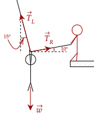
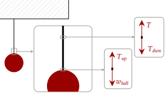
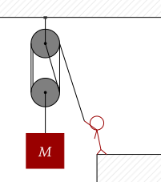
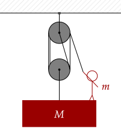
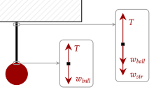

When you push on something, it exerts a normal force to counteract your pushing. When you pull on something, you also exert a force. Take for example a box on a string. The box is pulled down by its weight, which in turn pulls down the rope.

Like with the normal force, the weight and this pulling force are not pairs; the pulling force's partner is the pull of the box on the rope. Further, the rope pulls on the ceiling, and the ceiling pulls back on the rope. This pulling force occurs on various objects that can stretch, like strings, ropes, or cords.
Tension "transmits" force through its medium. In a tug of war, both teams pull on the rope. Even if they pull at different strengths, the tension within the rope is equal.

For example, let's say the teams pull at 50N and 100N. The tension in the rope is somewhere inbetween, but let's say its 75N. The two teams are kept in place by friction. By pushing on the floor, the normal force is increased, and thus the static friction is increased. Once this pulling force (tension) beats out this force, the team starts accelerating backwards, and will lose.
Question 1
(HRK Q5.1) You can pull a wagon with a rope, but you can’t push it with a rope. Is there such a thing as a “negative” tension?
Answer
No, there is no such thing as a negative tension. Tension is strictly a pulling force.
Exercise 1
(HRK E5.4) An elevator and its load have a combined mass of 1600 kg. Find the tension in the supporting cable when the elevator, originally moving downward at 12.0 m/s, is brought to rest with constant acceleration in a distance of 42.0 m.
Solution
The net force in the vertical direction is causing the deceleration. The two vertical forces are the weight and the tension of the rope pulling up. We set weight as negative.
We see here that we need the acceleration. This can be done via our kinematic equations, specifically our time-independent equation.
Plugging in our values, we get that the tension is the following.
Exercise 2
(LSM P6.30) After a mishap, a 76.0-kg circus performer clings to a trapeze, which is being pulled to the side by another circus artist, as shown below. Calculate the tension in the two ropes if the person is momentarily motionless.

Solution
There are two forces acting in the horizontal direction, being the horizontal components of the left and right tensions.
Decomposing the two tensions, we have the following.
You can either choose to solve with the tension in the right or the tension in the left, but we choose to start with the left tension.
For the vertical net force, we have the weight, and the two vertical components of the tensions. We also decompose the forces.
We now substitute in our value for the right tension.
After plugging in the values, we get the tension in the left side is about 736N. To get the right side, we just return to our equation.
Problem 1
A rope is placed and a force is applied on its center, displacing it like the figure below.

Show that the tension in the rope, in both the left and right ends, is given by the following equation. All the forces are balanced.
Solution
As we push on the rope, there is a tension at the point of contact pulling the rope up and to the left, and a tension at the right pulling the rope up and to the right.
There are two forces acting in the horizontal direction, being the horizontal components of the left and right tensions.
Now, we decompose the two tensions, noting that it is the adjacent side of the angle θ.
This shows that the magnitude of tension in the left and right side is equal. For simplicity, let's just use the symbol , given that both of them are equal anyway. For the vertical net force, we have the force pushing down, and the two vertical components of the left and right tension.
We now substitute in the value we have above, using the new symbol .
How do strings transmit force through their medium? We can see this via looking at infinitesimal portion of the string. Let's take a ball attached to a string, being kept in equilibrium; since it is in equilibrium, the string has no net force acting on it.
If we look at the infinitesimal portion connected to the ball, it has the weight of the ball pulling it down. To keep it in equilibrium, the string "pulls" on this infinitesimal portion upward, applying a force of tension to keep that infinitesimal part in place.

Ropes are often used in pulley-systems for this property. If we pull on an end, this force is transmitted all throughout the string; if we coil the spring around pulleys multiple times, more forces of tension are generated.
Problem 2a
(Morin P4.4a) A pulley system is shown as follows, with the rope wrapping twice around the top of the top pulley and the bottom of the bottom pulley. Such a system is called a "block and tackle".

Assume that the segment of rope attached to the center of the top pulley is essentially vertical, and that the pulleys have negligible mass. What force on the rope must be exerted by the person in order to hold up the block, or equivalently to move it upward at constant speed?
Solution
The whole pulley system pulls on the mass. If we look at it, there are four strings which are pulled downwards, not including the one by the person. By the Law of Interaction, these four pull upward with the same force of tension.
We then have the following relation. To keep the block in equilibrium, the four forces of tension must balance out the weight of the mass.
Now, the tension all culminates in the force that the person applies. At that point, the person must apply the same force of tension to keep the string taut and in equilibrium. Thus, they are equal. We then have this expression.
Problem 2b
(Morin P4.4a) The same pulley system is shown, but this time the person of mass is on the block.

Assume the same assumptions in the previous problem, as well as that the tension connecting the person's hand to the upper pulley is essentially vertical. What force is now required?
Solution
Counting the tensions now, there are five forces of tension pulling the person and block up. Note that now we include the force of the man pulling the rope down.
The force of tension all accumulates at the force of the man, so it must be equal to the equation above.
This assumes one thing however; and that is that the string is massless. In an example where the string is not massless, the portion at the top would have to pull up the mass of the entire string below it; in other words, the tension is not the same throughout the entire string.
